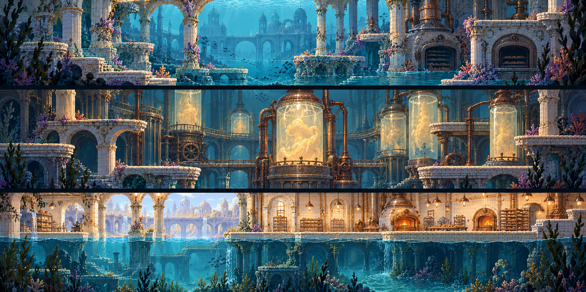

A little warmth, a long way beneath the surface.
Original FM-inspired composition · E Dorian · 104 BPM · 4/4 · 73.8-second loop
Ready — tap Play to enable audio.
Entrance → current → deep chamber → open-water chorus
0:00 / 1:14
A recurring E Dorian hook opens into a syncopated bass groove and answering bubbles. The minor melody lifts through Dorian’s characteristic raised sixth, with repeated calls and clear answers. The deep chamber drops into spacious half-time, then the arrangement builds into an open-water chorus with a second melody before falling away into the entrance again.
The underwater mix rolls off bright edges, adds a little low-mid warmth, and leaves a short, quiet echo. Its depth shifts gently with the arrangement. Toggle it while playing to compare with the clear version; Bakery 2 stays unprocessed.
Listen through one full loop to hear the brighter middle passage. Compare switches to the approved Bakery 2 score. Switching tabs stops playback; tap Play when you return. Nothing starts automatically.
An isolated listening audition using the existing sound engine. No changes to gameplay, saved progress, or the level’s temporary soundtrack.